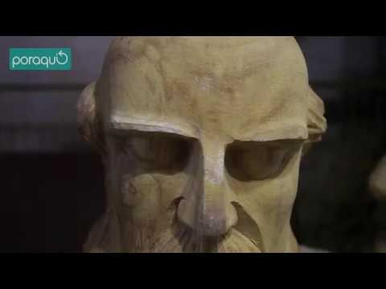
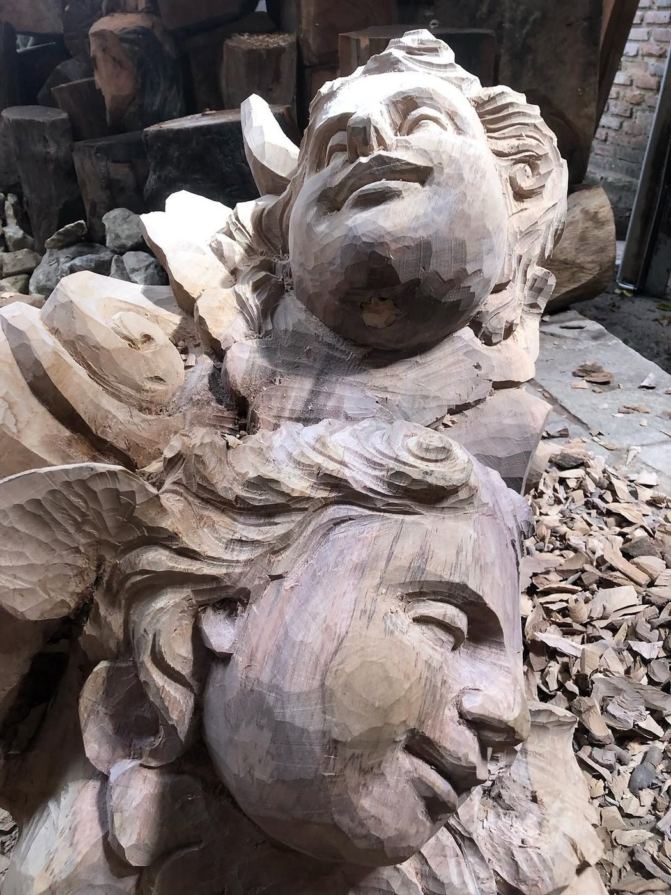

Mestre Nicola
Arte sacra, devoção e escultura barroca em linguagem popular.
Jaime Nicola de Oliveira, conhecido como Mestre Nicola, construiu uma obra devocional em torno de santos, anjos e imagens cristãs, aproximando tradição barroca e sensibilidade popular.
Jaime Nicola de Oliveira nasceu em Quipapá, Pernambuco. Começou a atividade artesanal aos 12 anos e, aos 17, já trabalhava profissionalmente com a escultura.
Sua casa e seu ateliê são descritos como um espaço de devoção: fotografias, santos, anjos e imagens cristãs se misturam à rotina de trabalho. Nicola fala da arte como ofício, fé e dedicação diária.
Sua produção se concentra na arte sacra, com santos e anjos em pedra-sabão, pedra calcária, granito, mármore e madeira. A devoção cristã aparece em diálogo com a tradição barroca e com a linguagem popular de Pernambuco.
A imagem sagrada aparece como encontro entre técnica, fé e permanência.
Para observar na peça
- Expressões dos rostos
- Gestos de santos e anjos
- Referências barrocas
- Relação entre devoção e ofício
Materiais e técnica
Galeria de peças e referências de estilo
Obras e peças públicas reunidas para reconhecer linguagem, materiais e técnica. As peças da exposição são vistas apenas ao vivo.


Fontes e créditos
- Governo de Pernambuco — Mestre Nicola | Alameda dos Mestres https://www.youtube.com/watch?v=UydXDxNfD1c
- Artesol — Mestres da Arte Popular Pernambucana #4 Mestre Nicola https://artesol.org.br/midiateca/mestres-da-arte-popular-pernambucana-4-mestre-nicola/
- Artesol — Mestre Nicola e a arte barroca de Barra de Jangada https://artesol.org.br/midiateca/mestre-nicola-e-a-arte-barroca-de-barra-de-jangada/